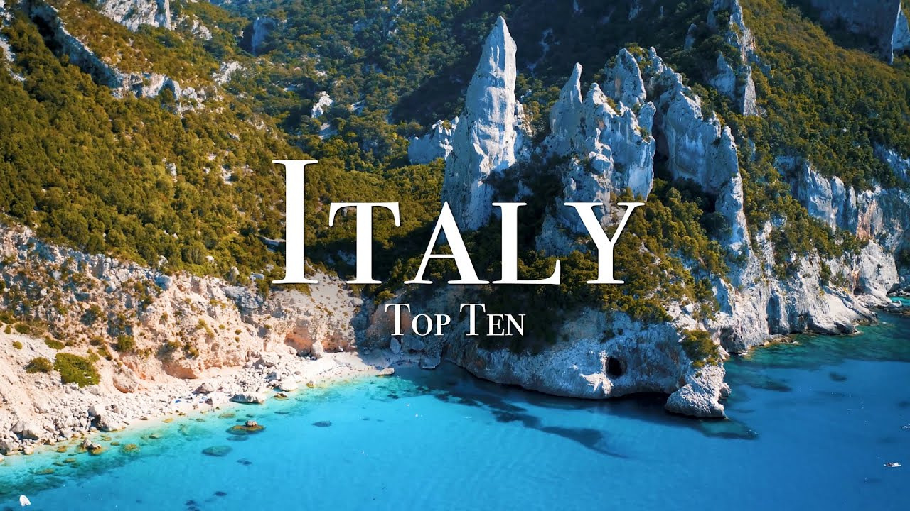

【意大利十大必游之地 - 4K旅游指南】
Summary: Ryan shares his top 10 favorite places in Italy, from the stunning Amalfi Coast and Dolomites to historic Rome and picturesque Tuscany, highlighting breathtaking landscapes, rich history, and Mediterranean charm.
摘要： Ryan分享了他在意大利最喜爱的十大景点，从绝美的阿马尔菲海岸和多洛米蒂山脉到历史悠久的罗马和风景如画的托斯卡纳，展现了令人惊叹的风景、丰富的历史和地中海的魅力。

⏱️ Estimated Reading Time: 18 min
What's up guys my name is ryan and i spent the last few summers exploring the wonderful country of italy and i want to show you my favorite places so here's my italy top 10.
大家好，我是Ryan，过去几个夏天我一直在探索美丽的意大利，现在我想和大家分享我最喜欢的地方，以下是我的意大利十大必游之地。
italy has to be one of my all-time favorite countries it's home to some of the world's most fascinating history stunning towns and pure mediterranean vibes from the jagged peaks of the dolomites to the jaw-dropping coast of sardinia italy has it all
意大利是我一直以来最喜爱的国家之一，这里拥有世界上最迷人的历史、令人惊叹的小镇和纯粹的地中海风情，从多洛米蒂的锯齿状山峰到撒丁岛令人屏息的海岸，意大利应有尽有。
let's start this video off at the incredible amalfi coast i have to say this is one of the most beautiful places not just in italy but all of europe
让我们从令人难以置信的阿马尔菲海岸开始这段视频，我必须说这是意大利乃至整个欧洲最美丽的地方之一。
the amalfi coast is located in southern italy about a three hours drive from rome it's just hard to believe this place exists
阿马尔菲海岸位于意大利南部，距离罗马约三小时车程，这个地方美得让人难以置信。
now one of the most well-known towns on the amalfi coast is positano and when you see this place in real life you won't believe it
阿马尔菲海岸上最著名的小镇之一是波西塔诺，当你亲眼看到它时，你会觉得难以置信。
it's hard to beat the backdrop of the mountains filled with colorful villas against a mediterranean sea filled with boats and yachts
五彩缤纷的别墅点缀在山峦背景中，与布满游艇和船只的地中海相映成趣，美不胜收。
if you can handle the skinny roads i definitely recommend just driving along the whole entire coastline and seeing all the beautiful towns
如果你能适应狭窄的道路，我强烈建议你沿着整个海岸线驾驶，欣赏沿途所有美丽的小镇。
one notable place on the coast is the city of atrani it's one of the best preserved medieval towns on the amalfi coast
海岸上一个值得注意的地方是阿特拉尼城，它是阿马尔菲海岸上保存最完好的中世纪小镇之一。
if you want a more adventurous activity you can take a hike on the path of the gods
如果你想体验更冒险的活动，可以在“众神之路”上徒步。
special thanks to my friend logan armstrong for helping me out with footage he has an awesome vlog of the amalfi coast that a link in the description below
特别感谢我的朋友Logan Armstrong提供的素材，他有一段关于阿马尔菲海岸的精彩视频，链接在下方描述中。
anyways the path of the gods is a six kilometer trail that takes you above the cliffs of the coast you will get some of the most jaw-dropping views i mean just unreal
“众神之路”是一条六公里长的步道，带你登上海岸悬崖，欣赏最令人屏息的美景，简直不可思议。
now the best time to visit the mulvey coast is around may or early fall you'll be able to miss the summer crowds while still enjoying the warm minute rain weather
游览阿马尔菲海岸的最佳时间是五月或初秋，你可以避开夏季的人群，同时享受温暖宜人的天气。
now just off the coast there's an incredible island called capri now to get to capri you can take a 45 minute ferry from naples for around 20 euros
海岸附近有一个令人难以置信的岛屿叫卡普里岛，从那不勒斯乘坐45分钟的渡轮即可到达，票价约20欧元。
now one of my favorite features of the island is the fire glione it's an impressive sea stack that juts out the island there's this little archway if you're sandy you can drive a boat through
岛上我最喜欢的景点之一是“Faraglioni”，这是一座突出的海蚀柱，中间有一个小拱门，如果你够勇敢，可以驾船穿过。
when you do go to capri i definitely recommend renting a boat that'll be the best way you can see the entire island and find all its hidden grottos and just jaw dropping coastline
去卡普里岛时，我强烈建议租一艘船，这是欣赏全岛、探索隐藏洞穴和绝美海岸线的最佳方式。
now after capri and the amalfi coast we're gonna head up to northern italy to visit the dolomites i spent several weeks exploring the dolomites and i consider it to be some of the greatest days of my life
在卡普里岛和阿马尔菲海岸之后，我们将前往意大利北部的多洛米蒂山脉，我花了几个星期探索这里，这是我一生中最美好的时光之一。
one of my favorite places in the dolomites is ceceda the green grass slopes contrasted with the jagged mountain ridge makes for one of the most unbelievable landscape combos in the world
多洛米蒂山脉中我最喜欢的地方是塞塞达，绿色的草坡与锯齿状的山脊形成对比，构成了世界上最难以置信的景观组合之一。
now to get to ceceda i took two gondolas up the mountain and made it to the top when i got there the clouds covered half the mountain make it from one of the best views i've ever gotten and places like this just really spark your imagination and make you feel like a kid again
为了到达塞塞达，我乘坐了两段缆车上山，到达山顶时，云雾笼罩了半座山，这是我见过的最美的景色之一，这样的地方真的能激发想象力，让你感觉重回童年。
i hope everyone can witness the power of sachita at least once in a life now another magical place nearby is out de souzi it's home to the largest high alpine meadow in europe
我希望每个人一生中至少能见证一次塞塞达的壮丽，附近的另一个神奇之地是奥德苏兹，这里有欧洲最大的高山草甸。
the backdrop of the sassolungo mountain with the farmhuts creates a scene straight out of a dream
萨索隆戈山与农舍的背景构成了一幅如梦如幻的画面。
another must visit place in the dolomites estreichimi the lavaredo now i love this place so much i spent four days exploring the area i mean there's just so much to see here
多洛米蒂山脉另一个必游之地是拉瓦雷多三峰，我太爱这里了，花了四天时间探索，这里实在有太多值得一看的地方。
the dolomites will have a special place in my heart and i hope you all can visit them one day now after hiking the dolomites we're gonna head over to lake cuomo
多洛米蒂山脉在我心中占有特殊的位置，希望你们有一天也能来游览。徒步完多洛米蒂后，我们将前往科莫湖。
now located at the base of the alps lake como is a sight to see the lake is shaped like an upside down letter y and it's known for its pitchers scenery and luxury villas
科莫湖位于阿尔卑斯山脚下，形状像一个倒置的字母Y，以其如画的风景和豪华别墅闻名。
lake como has been named one of the world's most beautiful lakes and i totally understand why
科莫湖被誉为世界上最美丽的湖泊之一，我完全理解为什么。
now when you're there you can walk the streets of bellagio or take a ferry to the other lakeside villages celebrities such as george clooney have villas here i mean hey if i had the money i'd probably buy one too
在那里，你可以漫步贝拉焦的街道，或乘渡轮前往其他湖畔村庄，乔治·克鲁尼等名人在这里拥有别墅，如果我有钱，可能也会买一栋。
after lake como we're gonna head to the coast to visit cinque terre now cinque terre is made up of five seaside villages that date back to medieval times
科莫湖之后，我们将前往海岸游览五渔村，五渔村由五个中世纪的海边村庄组成。
the small fishing villages have lined the coast for thousands of years during the middle ages the villages started to be attacked from pirates so fortifying walls were built to protect them from any future raids
这些小渔村沿海岸线分布已有数千年历史，中世纪时村庄开始遭受海盗袭击，因此修建了防御墙以保护它们免受未来的袭击。
now the small town of vernazza is one of my favorites it has the only natural port of cinque terre it remains one of the truest fishing villages on the italian riviera and i just can't get over these colorful houses and beauty of these cities it's just hard to beat the charm of these italian villages
韦尔纳扎是我最喜欢的小镇之一，它是五渔村中唯一拥有天然港口的村庄，仍然是意大利里维埃拉最真实的渔村之一，这些五彩缤纷的房屋和城市的美让我难以忘怀，这些意大利村庄的魅力无与伦比。
after cinque terre we're gonna head to the second largest island in the mediterranean sardinia with some of europe's best coastline pristine beaches and the clearest water i've ever seen sardinia is the place you gotta go
五渔村之后，我们将前往地中海第二大岛撒丁岛，这里有欧洲最棒的海岸线、原始的海滩和我见过的最清澈的海水，撒丁岛是你必须去的地方。
now one of the most impressive spots on sardinia is the maune coast it's 40 kilometers a coastline that's made up of massive limestone cliffs and secluded beaches
撒丁岛上最令人印象深刻的景点之一是马乌纳海岸，这条40公里长的海岸线由巨大的石灰岩悬崖和隐蔽的海滩组成。
now special thanks to my friend the drone book for helping out with footage he has one of the best videos on sardinia and i'll link in the description below there's so many great places in it
特别感谢我的朋友The Drone Book提供的素材，他有一段关于撒丁岛的最佳视频，我会在下方描述中附上链接，这里有很多很棒的地方。
now the ball night coast isn't the easiest place to reach most places require a hike or a boat ride so if you do go i definitely recommend renting a boat so you can see all the coast
马乌纳海岸并不是最容易到达的地方，大多数地方需要徒步或乘船前往，所以如果你去的话，我强烈建议租一艘船，这样你可以欣赏整个海岸。
now one of my favorite places is cala guardarite it has this insane rock formation coupled with crystal clear water i mean i would just do anything be cruising on a boat there right now i mean just a freaking paradise there
我最喜欢的地方之一是卡拉瓜达里特，这里有令人惊叹的岩石构造和清澈见底的海水，我现在愿意做任何事情，只为在那里乘船巡航，简直是天堂。
now after sardinia we're gonna head back to the mainland to visit italy's capital of rome now rome may be the one of the most famous and iconic capitals in the world its history spans over 20 centuries with its founding taking place in 753 bc ancient rome's architecture stands today and draws millions of tours each year
撒丁岛之后，我们将返回意大利大陆，游览首都罗马。罗马可能是世界上最著名和最具标志性的首都之一，其历史跨越20多个世纪，始建于公元前753年，古罗马的建筑至今仍屹立不倒，每年吸引数百万游客。
one of the most well-known structures of the capital is the colosseum it's this oval-shaped amphitheater that was completed in 80 80. it was the largest amphitheater built and could hold anywhere from 50 to 80 000 spectators you can just marvel at structure from the outside or take a guided tour to witness the interior
罗马最著名的建筑之一是斗兽场，这座椭圆形竞技场于公元80年完工，是当时最大的竞技场，可容纳5万至8万名观众。你可以从外部欣赏这座建筑，或参加导览参观内部。
one of my favorite attractions is the trevi fountain it's a baroque style fountain that was built in 1762 i mean there's just so much to see in rome i hope you can all visit it one day
我最喜欢的景点之一是特莱维喷泉，这座巴洛克风格的喷泉建于1762年。罗马有太多值得一看的地方，希望你们有一天都能来游览。
after rome we're gonna head south to visit the region of puglia now located on the boot hill of italy puglia is a region famous for its white-washed towns and magnificent coastline
罗马之后，我们将前往南部的普利亚大区，普利亚位于意大利的“靴跟”上，以其白色小镇和壮丽的海岸线闻名。
one of my favorite places in puglia is plyano amare it's a stunning town right on the adriatic coast what i love about it is how the city is built right on the sea cliffs and they're just on there so perfectly that it looks like they're gonna fall off there's some restaurants built into the caves on the sea cliffs i mean just such a cool spot
普利亚我最喜欢的地方是波利尼亚诺阿马雷，这座迷人的小镇坐落在亚得里亚海岸边，我喜欢它建在海崖上的样子，看起来仿佛随时会掉下去。有些餐厅建在海崖的洞穴里，简直太酷了。
one of the most famous places in the city is cala porto it's probably the most recognized place in alapulia it's a stunning beach that's surrounded by cliffs coupled with crystal clear mediterranean water let me just pure paradise there
城市中最著名的地方之一是卡拉波尔图，这可能是普利亚最知名的景点，这是一个被悬崖环绕的绝美海滩，搭配着清澈的地中海海水，简直是纯粹的天堂。
afterwards we're gonna head to the island of cecily now sicily is the largest island in the mediterranean it's just full of culture and fascinating history
之后，我们将前往西西里岛，西西里是地中海最大的岛屿，充满了文化和迷人的历史。
one of the most impressive places on the island is the valley of the temples located in the town of aguigento it's one of the world's most stunning examples of greek architecture there were seven temples built here by the greeks in the 5th century bc unfortunately they were burnt down by the carthaginians but rebuilt by the romans four centuries later
岛上最令人印象深刻的地方之一是位于阿格里真托的“神庙之谷”，这是世界上最令人惊叹的希腊建筑范例之一。公元前5世纪，希腊人在这里建造了七座神庙，不幸的是它们被迦太基人烧毁，但四个世纪后由罗马人重建。
one of the most well preserved is the temple of concordia it features the classic greek pillars and it just makes you wonder what this must have looked like when it was first built
保存最完好的是协和神庙，它拥有经典的希腊柱式，让人不禁想象它初建时的样子。
while we're still in sicily we're gonna head over to the city of catania what's crazy about catania is that it lies at the base of the massive mount aetna volcano which is 3326 meters tall it's one of the world's most active volcanoes i'm just wild to see the ash shooting out the top and what a crazy yet beautiful city
我们还在西西里时，将前往卡塔尼亚市。卡塔尼亚的疯狂之处在于它位于巨大的埃特纳火山脚下，这座火山高3326米，是世界上最活跃的火山之一。看到火山灰从山顶喷出，这座疯狂而美丽的城市令人惊叹。
afterwards we're going to head up north to the incredible region of tuscany now located in central italy tuscany is known for its landscapes history and artistic legacy i mean i've been obsessed with tuscany ever since i've seen the gladiator it's a land full of rolling golden hills dotted with countless little hilltop towns i mean just be so cool to retire here and live on a tuscan farm
之后，我们将前往北部不可思议的托斯卡纳大区。托斯卡纳位于意大利中部，以其风景、历史和艺术遗产闻名。自从看了《角斗士》后，我就迷上了托斯卡纳，这片土地上有连绵起伏的金色山丘和无数山顶小镇，在这里退休并住在托斯卡纳农场一定很棒。
one of my favorite cities in tuscany is san gimignano now san gimignano is a stunning medieval city perched upon a hill one of the most iconic features of the city is the medieval watchtowers currently there are 14 watchtowers still standing but during its prime there were over 72 towers with the highest being 230 feet tall the towers were built as a result of competing families who wanted to build the tallest and most grand tower i can't imagine how muscle looked like back then i guess you could say it was the manhattan of the middle ages
托斯卡纳我最喜欢的城市之一是圣吉米尼亚诺，这座迷人的中世纪城市坐落在山顶上，最具标志性的特征是它的中世纪瞭望塔。目前仍有14座塔楼屹立，但在鼎盛时期有超过72座塔楼，最高的达230英尺。这些塔楼是竞争家族为了建造最高、最宏伟的塔楼而建的，我无法想象当时的样子，可以说它是中世纪的曼哈顿。
san gimignano's medieval vibe has been untouched throughout time and has become one of the most popular medieval locations in all italy after san gimignano we're gonna head to the capital of tuscany to visit the iconic city of florence i have to say that florence is my favorite city in all italy it considered to be the birthplace of the renaissance
圣吉米尼亚诺的中世纪氛围一直未受破坏，成为全意大利最受欢迎的中世纪景点之一。圣吉米尼亚诺之后，我们将前往托斯卡纳的首府，游览标志性的佛罗伦萨市。我必须说佛罗伦萨是我在意大利最喜欢的城市，它被认为是文艺复兴的发源地。
one of the most impressive buildings is the florence cathedral when you look at it you just can't believe how big it is it was completed in 1436 and it just amazes me that they were able to engineer such a big dome back then the ponte vecchio bridge is another historic site as it crosses the arno river and i just can't say enough good things about florida it's such an incredible city
最令人印象深刻的建筑之一是佛罗伦萨大教堂，当你看到它时，简直无法相信它有多大。它于1436年完工，令我惊讶的是他们当时就能设计出如此巨大的穹顶。老桥是另一个历史遗迹，它横跨阿诺河，我对佛罗伦萨的